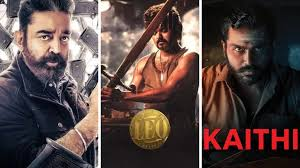

WELCOME TO HERO'S WORLD

VIKRAM
Once a feared black-ops commander, Vikram disappeared after his son Prabhanjan was brutally killed by the drug mafia,
presumed dead by the world. But in truth, he became a silent ghost, waging a shadow war against
the syndicate that took everything from him. He formed a covert force, hunting down cartel members, burning drug routes,
and dismantling the empire of poison. No badge, no law—just justice. His goal is not revenge but redemption:
to wipe out every root of the drug network infecting the country, from the streets to the system.
Now, with new warriors like Dilli and Amar rising under his guidance, Vikram isn’t just fighting
a battle—he’s building a legacy.
Because for him, this is more than a mission… it’s a war that never ends.
LEO
Parthiban was a humble café owner in Himachal, living a quiet life with his wife and daughter.
But when a group of brutal gangsters tried to destroy his peace, something snapped.
The world saw Parthi... but inside him was LEO DAS, a ruthless assassin from a forgotten past—born into blood,
shaped by violence, and once the heir to a powerful crime family. He tried to escape that cursed legacy,
but violence found him again. Now, Leo has awakened—not as a villain, not as a hero, but as a necessary evil.
With precision and fury, he tears through the dark web of arms dealers and underground warlords,
exposing secrets buried by blood. His goal is clear: erase the sins of his past by hunting the monsters
his family once empowered. But the question remains—has he truly left the darkness,
or is he just better at controlling it?
DILLI
Dilli was just a prisoner with a past, dreaming of seeing his daughter
again after ten long years. But fate had other plans. One night, while transporting
unconscious cops in a lorry, he became the unexpected guardian of justice—single-handedly
taking down gangs, drug lords, and an entire army of chaos. Behind his quiet face hides a
violent storm—once a feared gangster who walked away from the world of crime after his
wife’s death. But when he sees the same poison spreading through the streets again,
threatening children like his own, Dilli decides to rise—not for glory, not for revenge,
but for redemption. With nothing to lose and a heart full of rage, he joins the underground
war led by Vikram, becoming the muscle that speaks through action,not words. He’s not a hero... he’s a father who won’t let any child suffer the way his did.
To Save World From Drugs Click her and Register
Click To Register